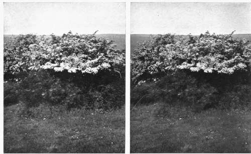

A Few Hints On Stereoscopic Nature Photography. Part 3
Description
This section is from the book "Nature Photography For Beginners", by E. J. Bedford. Also available from Amazon: Nature Photography for Beginners.
A Few Hints On Stereoscopic Nature Photography. Part 3
The general directions given in the chapter on development, etc., will apply equally well to stereoscopic work, but there are one or two points which will require special consideration. One is to avoid hard negatives or subjects with violent contrasts of light and shade. High lights printing out white are fatal to the best results, and if unavoidable in the negative should be obviated by a careful sunning down of all white patches on the print. In many cases the whole print may be exposed to light for a brief period after it has been removed from the printing frame. To avoid hard results the negatives should be well exposed, and if anything incline towards softness, and often a flat-looking print will be preferable for binocular examination, because the necessary relief will be obtained in the stereoscope. As a rule a glossy printing paper is the best to use, because, owing to the magnification which takes place in the stereoscope, a rough texture becomes much more pronounced. Ordinary P.O.P. is very good, or one or other of the half-mat gaslight papers may be used. The " Ensyna " paper, only recently placed upon the market by Messrs. Houghton & Co., of London, seems to be an ideal one, as any colour from a very warm brown to black can be easily obtained. As a rule warm colours are more agreeable than cold ones, but that, of course, is a matter of individual taste.
Fig. 30. Golden-crested Wren's Nest.
Fig. 31. Hedge Sparrows Nest.
We now come to a very important point—and one often very puzzling to beginners—that of the transposition, trimming, and mounting of the prints, and, however well the process has been carried out so far, the whole effect may be ruined by want of care in these matters. What we must bear in mind is that we have taken two pictures, and the one taken with the right hand lens must come on the right side of the finished slide and that taken with the left hand lens on the left side. But as our negative is produced in the camera in an inverted position, the print from it will be reversed and will require the two halves to be separated and made to change positions. The following diagrams will help to make the point quite clear:
Fig. 1.
Fig. 2.
Fig. 3.
Fig. 4.
Fig. i gives the view as seen on the ground glass of camera inverted and which, of course, will be reproduced on the sensitive plate. Fig. 2 is the resulting negative as seen right way up when looking through it from the glass side. Fig. 3 represents the print obtained from the negative which, of course, will be identical to the view of the negative seen in Fig. 2. Fig. 4 shows the print, which has been divided and transposed when arranging it on the mount. To avoid the possibility of incorrectly mounting the prints I make use of the following simple method. Previous to trimming the print I turn it over, keeping the top at the top, and mark the back of it as shown in the diagram:
Fig. 32. Common Partridge's Nest.
Fig. 33. Corn Bunting's Nest.
This should be done with a soft pencil so that the impression does not go through to the face of the print, and the letters should be placed about the centre of each half of it. Then when the print has been trimmed and the two portions have been separated, the one with L on it should be placed on the left side of the mount and the R portion on the right. After mounting each subject I immediately place it in the stereoscope, and if the effect produced is not correct it can be altered before the print begins to dry. Great care is necessary to see that the two prints are mounted so that similar points in each are exactly in the same relative horizontal and vertical positions on the mount.
In trimming the prints the following points should be observed. Both prints must have an identical base line, which can be secured by seeing that the trimming edge is placed so that it passes through the image of the same point in each print. A point near the centre of the lower margin of the print should be selected, and may be an edge of a piece of grass, or a leaf, stone, or any other point. It is better to trim by this means than by doing so parallel to the edge of the print, as in photographing objects on the ground, for example, no horizontal line would be included, and unless trimmed in the way suggested, it would be difficult to ensure the correct mounting of the two prints. The width between the eyes governs the width of print available for practical use, and this should not exceed two and a half inches. In the case of the post card size the height obtainable will not much exceed three inches, but if the 1/2-plate size is chosen, then the height of prints may be as much as four inches if desired, although the width should still be kept to two and a half or two and three-quarters of an inch at the most.
I have already stated that one advantage of the 1/2-plate size is the additional width at disposal for trimming the prints, but this is, in my opinion, more than outweighed by the extra size and weight to carry. In the post card size, on account of the somewhat limited space at disposal for trimming the prints, extra care should be taken in arranging the subjects on the plate so that it may occupy just the right position. The points of practice mentioned will apply equally to either size.
In trimming the prints it is usual to leave a little more of the subject on the left of the right hand picture and the right of the left hand picture. Another way of expressing the same thing is to say the two edges of the prints which come together in mounting should each show from one-sixteenth to one-eighth of an inch more of the subject than the outside edges. A separation of from one-sixteenth to one-eighth of an inch should also be left between the two prints. The effect of this is to give the idea of seeing the picture through an opening, as it were, but I have found in practice it makes no difference to the effect of relief produced in the subject whether the prints are trimmed and mounted in this way or not.
It should be seen that the distance between identical points in the foreground of each print should not exceed two and three-quarter inches, and this is especially necessary if the 1/2-plate size is used. It will be much easier for those unaccustomed to look at stereoscopic prints to obtain the necessary superposition of the two images if the distance between the two identical points referred to above does not exceed two and a half inches.
Before making an exposure be careful to see that the two lenses are working at the same size stop, otherwise inequality of illumination and definition will result. My experience is that for Nature work generally and stereoscopic work in particular strong sunlight is better avoided. Many of my most successful results have been obtained on a grey day. For very rapid exposures, sunlight is often necessary to secure sufficient exposure, and then care should be taken in selecting the point of view to avoid, as far as possible, any very heavy shadows or excessive contrasts.
Fig. 34. Hawthorn in Bloom.
Fig. 35. Hawthorn in Bloom (Nearer View of a Portion of Fig. 34).
One of the most fascinating branches of work is the production of stereoscopic transparencies, and now by the aid of the " Autochrome " plate these may be produced direct in the camera in all the beauty of the colours of the original. The limits of space, however, forbid me entering upon the consideration of these points here, and I must, therefore, refer the reader who is interested to other sources.
Continue to:
- prev: A Few Hints On Stereoscopic Nature Photography. Part 2
- Table of Contents
- next: Chapter VIII. How To Observe And Photograph Some Of Our Commoner Birds And Their Nests And Eggs
Tags
nature, photography, art, birds, camera